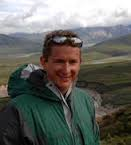

Daniel Hembree
Ph.D., The University of Kansas, 2011
Dissertation Title
Biogenic structures of modern and fossil continental organisms using trace fossil morphology to interpret paleoenvironment, paleoecology, and paleoclimate
Publications
Platt, B. F., and Hasiotis, S.T., 2014. Novel Neoichnology of Elephants: Nonlocomotive Interactions with Sediment, Locomotion Traces in Partially Snow-Covered Sediment, and Implications for Proboscidean Paleoichnology. D.I. Hembree et al. (eds.), Experimental Approaches to Understanding 1 Fossil Organisms, Topic in Geobiology 41, DOI 10.1007/978-94-017-8721-5_15.
Hasiotis, S.T., Halfen, A.F., Counts, J.W., Wasserman, H., Platt, B.F., Hembree, D.I., Jones, M., Hirmas, D.R., and Smith, J.J., 2013, Exploring old and new frontiers in continental ichnology—Evaluating its place in ichnology and role in geology. Geological Society of America National Meeting, Denver, CO, October 27-30, v. 45(7), p. 898.
Hasiotis, S.T., Halfen, A.F., Counts, J.W., Kraus. M.J., Smith, J.J., and Hembree, D.I., 2013, Bioturbation is the major process in the evolution of soils and landscapes—Evidence from modern and deep time. Geological Society of America National Meeting, Denver, CO, October 27-30, v. 45(7), p. 633.
Hasiotis, S. T., Fairchild, J., Wallace, T., Counts, J.W., Devlin, J.F., Hembree, D.I., and Smith, J.J., 2008. Field and laboratory studies on the effects of bioturbation on porosity and permeability in the vadose zone in continental settings: How ichnopedologic fabric shapes and modifies aquitards, aquicludes, aquifers, and tomorrow’s reservoirs and seals. Geological Society of America National Meeting, Houston, Texas, October 8, 1 p.
Hembree, D. I., and Hasiotis, S. T., 2008. Miocene Vertebrate and Invertebrate Burrows Defining Compound Paleosols in the Pawnee Creek Formation, Colorado, U.S.A. Palaeogeography, Palaeoclimatology, Palaeoecology, v. 270, p. 349-365.
Hasiotis, S. T., Platt, B. F., Hembree, D. I., and Everhart, M., 2007. The trace-fossil record of vertebrates. In, Miller, W. III (ed.), Trace Fossils—Concepts, Problems, Prospects, Elsevier Press, p. 196-218.
Hembree, D. I., and Hasiotis, S. T. 2007. Paleosols and ichnofossils of the White River Formation of Colorado: Insight into soil ecosystems of the North American midcontinent during the Eocene-Oligocene transition. PALAIOS v. 22, p. 123-142.
Hembree, D. I., and Hasiotis, S. T. 2007. Biogenic structures produced by the Kenyan sand boa Eryx colubrinus (Reptilia: Ophidia: Boidae): modern analog for interpreting continental trace fossils. Journal of Sedimentary Research, v. 77, p. 389-397.
Hembree, D. I., and Hasiotis, S. T. 2006. The identification and interpretation of reptile ichnofossils in paleosols through modern studies. Journal of Sedimentary Research, v. 76, p. 575-588.
Hembree, D. I., Hasiotis, S. T., and Martin, L. D. 2005. Torridorefugium eskridgensis (new ichnogenus and ichnospecies): amphibian aestivation burrows from the Lower Permian Speiser Shale of Kansas. Journal of Paleontology, v. 79(3), p. 596-606.
Hasiotis, S. T., Hembree, D. I., Myshrall, K. L., Laut, E. A., Mathis, R., Rogers, J. R., 2004. Linking biota, soils, hydrology, and the soil-water budget in northeastern Kansas: developing ichnologic signatures as proxies for ancient climates through actualistic studies. American Association of Petroleum Geologists National Meeting, Dallas, Texas, 1 p. Invited.
Hasiotis, S. T., Hembree, D. I., Smith, J. J., and Laut, E. A., 2004. Modern crayfish burrows as indicators of a spring and perched water table, Kansas Ecological Research Station, Lawrence, Kansas. Geological Society of America National Meeting, Denver, Colorado, v. 36(5), p. 130.
Hembree, D. I., Martin, L., and Hasiotis, S. T., 2004. Amphibian burrows and ephemeral ponds of the lower Permian Speiser Shale, Kansas: Evidence for seasonality in the Midcontinent. Palaeogeography, Palaeoclimatology, Palaeoecology, v. 203, p. 127-152.
Hembree, D. I., and Hasiotis, S. T., 2004. Casts of Modern Continental Burrows as Trace Fossil Analogs for Reconstructing Paleoenvironment and Paleoclimate. American Association of Petroleum Geologists National Meeting, Dallas, Texas, 1 p.
Hembree, D. I., and Hasiotis, S. T., 2004. Using paleosols and ichnofossils to interpret the changing paleoecology, paleoenvironments, and paleoclimate of the Eocene-Oligocene White River Formation, Colorado. Geological Society of America National Meeting, Denver, Colorado, 1 p.
Hembree, D. I., and Hasiotis, S. T., 2003. The fossil record and paleoecological significance of North American reptiles and their burrows: the interaction of fossorial reptiles with the substrate. Geological Society of America Annual Meeting, Abstracts with Programs, Seattle, Washington, v. 34(7), p. 499.
Hembree, D. I., Martin, L., and Hasiotis, S. T., 2003. Continental amphibian burrows from the Lower Permian Speiser Shale of Kansas, USA: Evidence for drought-induced aestivation in Permian tetrapods. Society of Vertebrate Paleontology 63rd Annual Meeting, October 15-18, 2003, St. Paul, Minnesota, 1 p.
